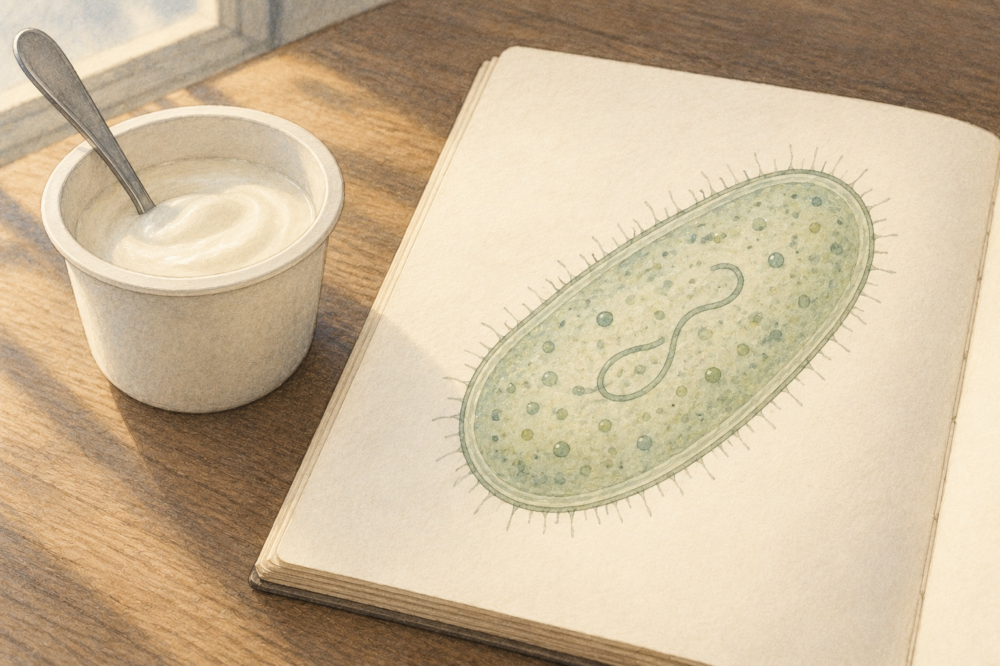

01Could a tiny guest be a helper?

Look closer. A yogurt cup sits beside the oval guest in the book.
A little explanation. Bacteria are whole living cells. Many help us: some live in our gut and help with food, and others help make yogurt. Some can make people unwell. We can welcome the helpers and keep our hands clean.
Try this. Say one place where helpful bacteria can live.